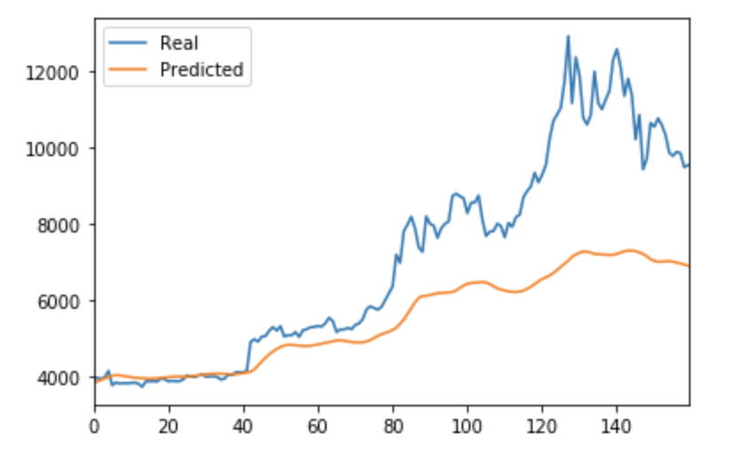
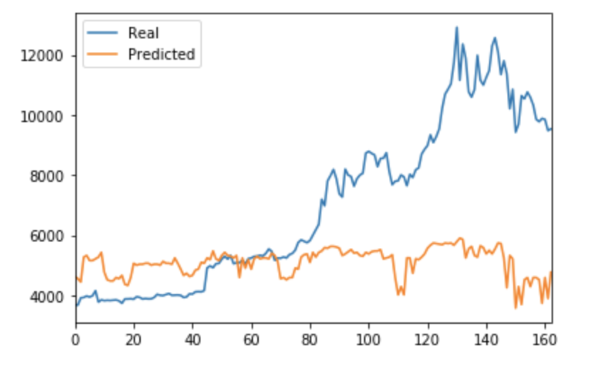

Cryptocurrency Price Forecasting with Recurrent Neural Networks
Developed and compared two LSTM models to forecast Bitcoin prices, evaluating whether sentiment data (Fear and Greed Index) provides a predictive edge over historical closing prices. The closing price-based model achieved significantly better performance, with over 5x lower loss.
Project Overview
Cryptocurrency markets are highly volatile and often driven by sentiment. This project investigates whether social sentiment indicators like the Crypto Fear and Greed Index (FNG) can improve predictive models for Bitcoin closing prices compared to traditional time series models using historical closing prices.
Two separate Long Short-Term Memory (LSTM) Recurrent Neural Network models were built:
- Model 1: Predicts BTC closing prices using a sequence of previous closing prices
- Model 2: Predicts BTC closing prices using a sequence of Fear and Greed Index (FNG) values
Data Preparation
Each model was trained on 70% of the dataset and tested on the remaining 30%. The data was scaled using MinMaxScaler and reshaped into the required LSTM input shape: (samples, time steps, features). Window sizes of 1, 2, and 10 were tested to evaluate model performance.
Model Architecture
Both models used the same LSTM architecture for consistency in comparison:
- One LSTM layer with 50 units
- Dropout for regularization
- Dense output layer with 1 neuron (for the next predicted closing price)
Results Summary
The model based on closing prices significantly outperformed the sentiment-based model across all metrics:
- Lowest loss: 0.0363 (Closing Prices) vs 0.2016 (FNG Sentiment)
- Better time-series tracking: Visual comparison shows the closing prices model aligns more closely with real values
- Best window size: Window size = 1 achieved the lowest loss in both models
Visual Comparison of Predictions
Predicted vs Real Prices – Closing Price Model
Predicted vs Real Prices – Fear and Greed Model
Loss Comparison by Window Size
Fear and Greed Model
- Window = 1 → Loss = 0.2016
- Window = 2 → Loss = 0.2095
- Window = 10 → Loss = 0.2709
Closing Prices Model
- Window = 1 → Loss = 0.0363
- Window = 2 → Loss = 0.0389
- Window = 10 → Loss = 0.1026
Conclusion
This analysis confirms that sentiment indicators like the Crypto Fear and Greed Index do not outperform traditional price-based models for predicting short-term cryptocurrency trends. The LSTM model trained on historical closing prices provided much more accurate forecasts with a significantly lower loss, and better alignment with actual prices over time.
While sentiment analysis remains valuable for broader market understanding, historical price data currently offers more reliable predictive power for Bitcoin when using deep learning models like LSTM.